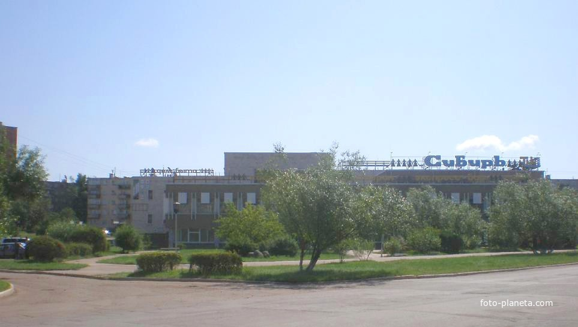
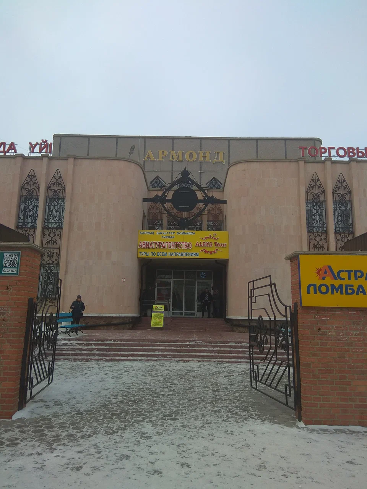
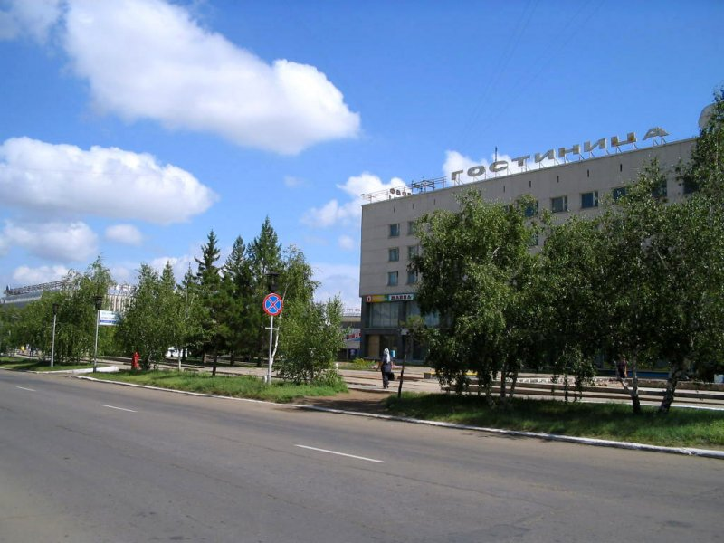
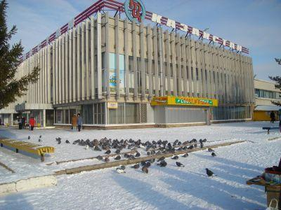
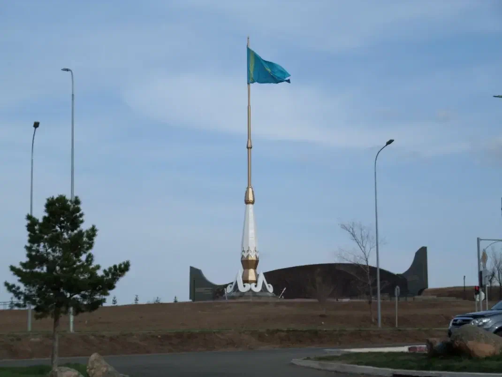
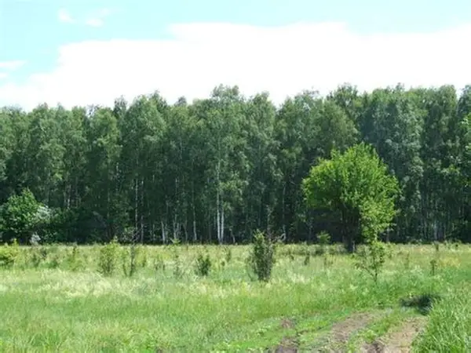
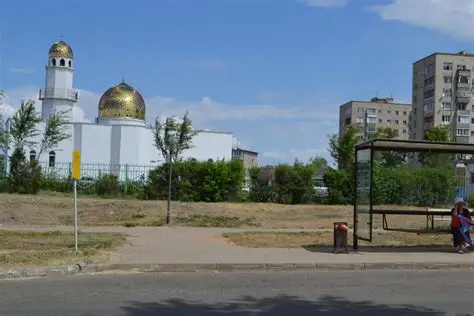
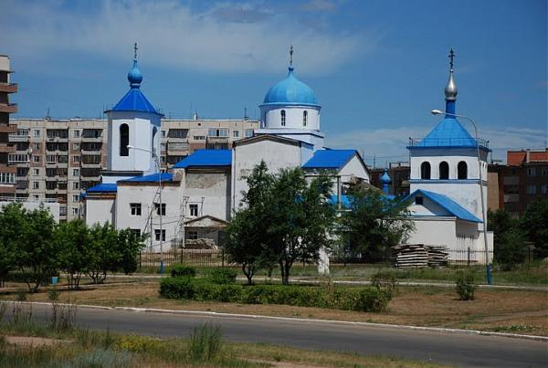

ТЦ «Сибирь»
Один из известных торговых узлов города, расположенный в оживленном районе. Популярное место для повседневных покупок и встреч горожан.

Один из известных торговых узлов города, расположенный в оживленном районе. Популярное место для повседневных покупок и встреч горожан.

Современный торговый объект, предлагающий широкий спектр товаров и услуг. Удачно вписан в инфраструктуру микрорайона.

Открыта в 1972 году. Является визитной карточкой центральной площади и примером архитектуры 70-х годов.

Центральный торговый комплекс, объединяющий множество магазинов и сервисов в едином архитектурном пространстве.

Величественное сооружение высотой 30 метров. Установлен в 2014 году и является местом проведения торжественных мероприятий.

Главная зона отдыха города с прогулочными аллеями, памятниками и зонами для активного отдыха.

Архитектурное украшение города, центр духовной жизни мусульманской общины, действующий с 90-х годов.

Расположен в 7-м микрорайоне. Красивое церковное здание, ставшее важной частью духовного ландшафта Степногорска.